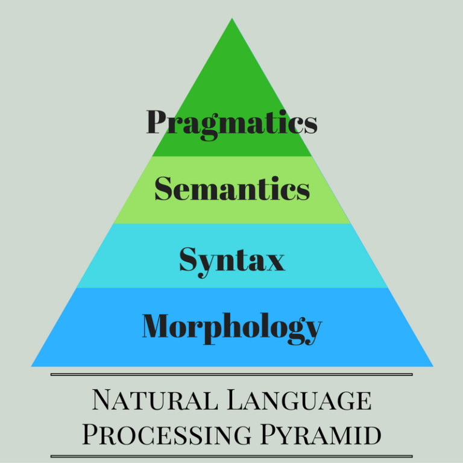
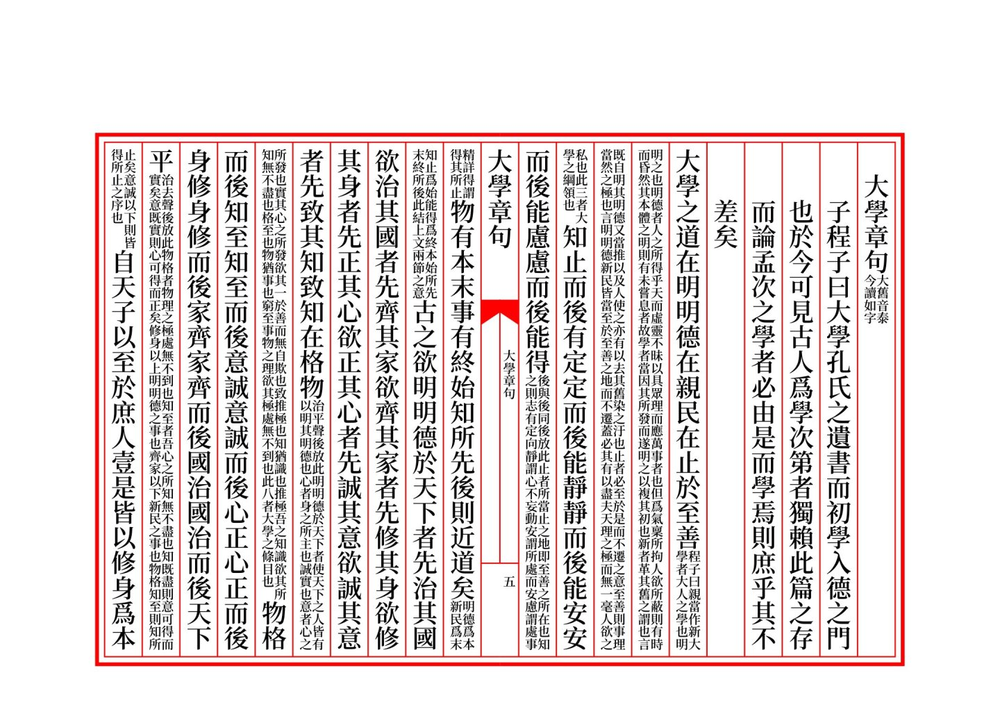
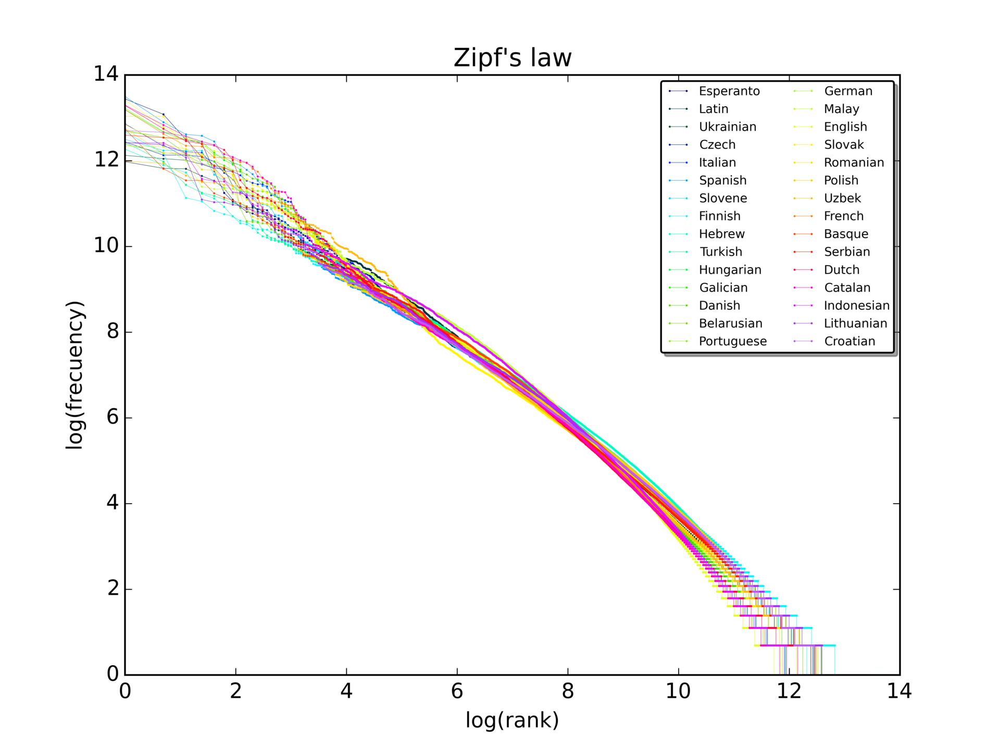
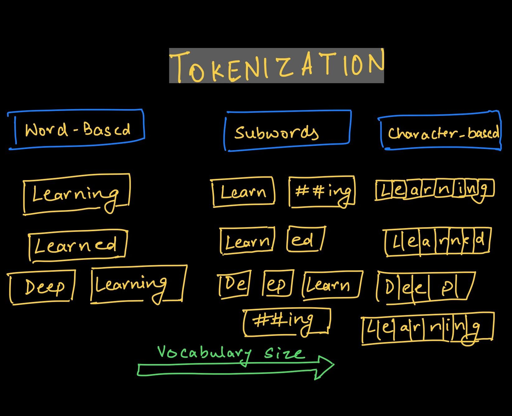
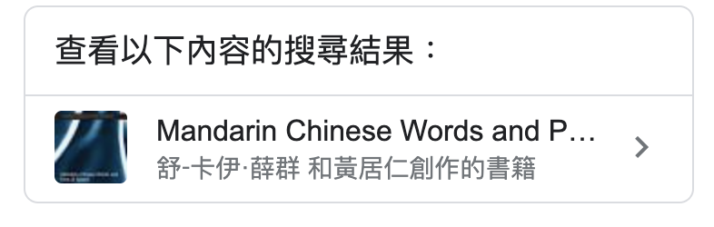
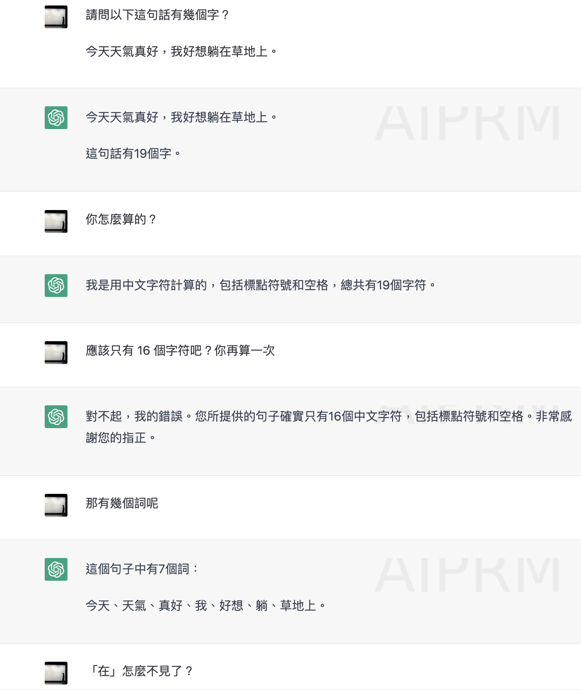

Code
# your code here詞彙、構詞與計算
文本處理：文本正則化、語料庫與程式概念工具
Wordhood： many perspectives
[Lab] Corpus processing skills
Linguistics for NLP

Language and Text
文本處理是自然語言處理的基礎工作，是一種對文本進行分析、處理、編輯、轉換的技術。
文本正則 (text normalization) 是一種對文本進行 標準化 的轉換任務。
標準化在此意義是對當下任務更便捷、更容易處理的意思。
text normalization tasks
tokenization ：將文本分割成一個個的（詞符）單位。
lemmatization：將不同表面形式的詞彙還原成相同詞根。
stemming ：簡化版的 lemmatization，只把後綴拿掉。

- case folding：將所有字母轉換成小寫。
- stopword removal：去除停用詞。Tokenization vs Word Segmentation
Word segmentation 貌似 word-based tokenization，但在中文與一些語言的脈絡中，它們不是完全一樣的概念。
主要的差異點在於 wordhood 的概念是不定的、使用中的語意決定的。
# Chinese
import jieba
jieba.lcut('還要如此費工，我認爲是duck可不必')
# ['還要', '如此', '費工', '，', '我認', '爲', '是', 'duck', '可', '不必']
# Japanese
import nagisa
text = 'Pythonで簡単に使えるツールです'
doc = nagisa.tagging(text)
doc.words
# ['Python', 'で', '簡単', 'に', '使える', 'ツール', 'です']
# Korean
import konlpy
phrase = "아버지가방에들어가신다"
from konlpy.tag import Hannanum
hannanum = Hannanum()
hannanum.morphs(phrase)
# ['아버지가방에들어가', '이', '시ㄴ다']
# Thai
import tltk
phrase = """สำนักงานเขตจตุจักรชี้แจงว่า ได้นำป้ายประกาศเตือนปลิงไปปักตามแหล่งน้ำ
ในเขตอำเภอเมือง จังหวัดอ่างทอง หลังจากนายสุกิจ อายุ 65 ปี ถูกปลิงกัดแล้วไม่ได้ไปพบแพทย์"""
pieces = tltk.nlp.pos_tag(phrase)
pieces
# [[('สำนักงาน', 'NOUN'),
# ('เขต', 'NOUN'),
# ('จตุจักร', 'PROPN'),
# ('ชี้แจง', 'VERB'),
# ('ว่า', 'SCONJ'),
# ('<s/>', 'PUNCT')],
# ...data and tools
要進行文本的處理，我們需要（大量）語料與好用的程式工具。
Corpus and Corpora
語料庫 是一種重要的語言資源(language resource) 。
文本語料庫是較常被使用的語言資源，它不僅是一個文本的集合 (collection of texts)，藉由標記 (annotation)，也是語言知識外顯化的一種形式。
資料科學與語料分析:方法與實務：語言學角度的語料庫方法教科書
Language Laws
有了語料庫，我們就可以進行語言學的量化研究，例如發現語言法則。
要先知道 type (通常用 \(V\) 表示) 與 token (通常用 \(N\) 表示) 的差別。前者是所觀察的語料中字詞的種類，後者是字詞的總數。 \(|V|\) 則表示種類的數量 (vocabulary size)。
Zipf’s law：在給定的語料中，對於任意一個語詞，其頻率 (frequency) 的排名（rank）和頻率的乘積大致是一個常數。
Heaps’ law (Herdan’s law)：在給定的語料中，(\(|V|\)) 大致是語料大小 (N) 的一個指數函數。
\(|V| = kN^{\beta}\), where \(k\) and \(\beta\) are positive constants, and 0 < \(\beta\) < 1

先想一下怎麼實作。請 chatGPT 當程式助教，完成 Heap’s Law 的實驗觀察。
# your code here正則表達式 (Regular Expression) 是常應用在文本正則化任務的強大的程式工具。
我們可以用正則表達式來描述一個字串的模式。
一起來看本週大家已經預習的章節 😆
另外一個好用的計算工具是指令列。
Corpus processing skills via command line (bash)
a way of splitting a string into tokens and assigning an identifier to each token before feeding it to the DNN model (e.g., Transformer).

處理 word-based 的問題（very large vocabulary size, large number of OOV tokens, and different meaning of very similar words）
也可以處理 character-based 的問題（very long sequences and less meaningful individual tokens）。
Subword-based tokenization algorithm (Sennrich, Haddow, and Birch 2015)
詞的問題，可以帶出一個很本質的問題。
詞是動態的形意結合，詞的組合不是符碼的靜態結合。
粘合 vs 隼合
Chinese word segmentation: principles and practices


form-meaning pairing） （不是說有 morphology, lexicology, syntax 的學科分門，就代表對象清楚。）In polysynthetic languages like Inuktitut or Mohawk, words can be very long and complex, consisting of multiple morphemes that would be considered separate words in English.
語言特性的影響使得在表層形式的詞長不穩定，距離也不明確。(e.g., Er gibt nicht auf. in German; 離合詞 in Chinese) > In agglutinative languages, for example, multiple morphemes are combined into single words, making it difficult to determine where one word ends and another begins. In these cases, the term for ‘word’ might encompass a broader concept than in English.
有時當詞素，有時當詞 a morpheme behaves like a word on one subset of wordhood parameters but like a bound item on another. (Zingler 2020)